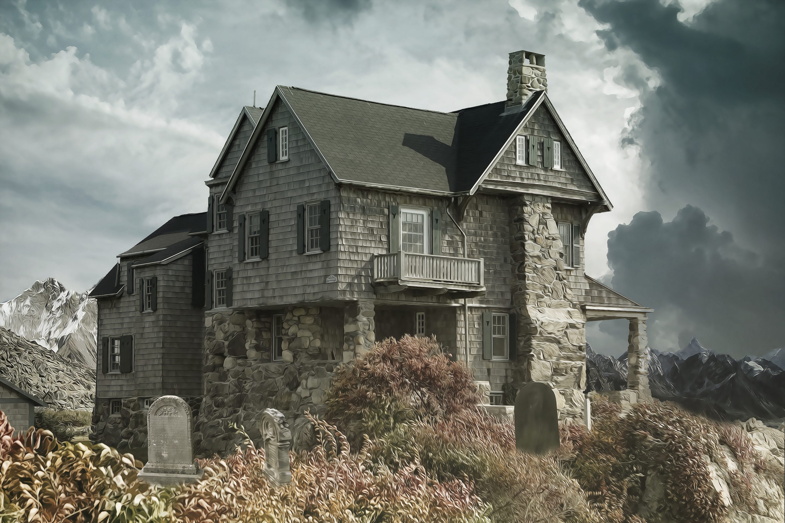
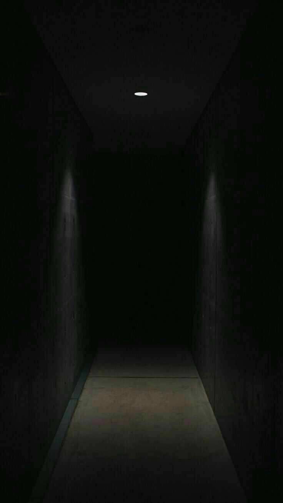
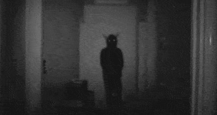
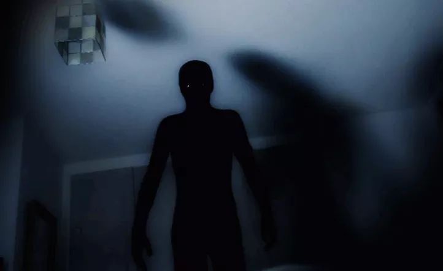

Acto 1 — La Llegada
La casa parecía abandonada desde hacía años. Aun así, tenía algo acogedor. El silencio del lugar transmitía paz. Las paredes viejas y el olor a madera húmeda hacían sentir que el tiempo se había detenido.


Acto 2 — Las Señales
A medianoche comenzaron los sonidos. Pasos lentos sobre el segundo piso. Puertas que parecían abrirse solas. El reloj dejó de avanzar exactamente a las 2:13 AM.
Cada habitación parecía observar en silencio. La madera crujía incluso cuando nadie caminaba.
Acto 3 — La Casa Despierta
Las paredes comenzaron a crujir como si respiraran. Las luces se apagaron. Entonces apareció la figura al final del pasillo. La casa nunca estuvo vacía. Solo estaba esperando.

